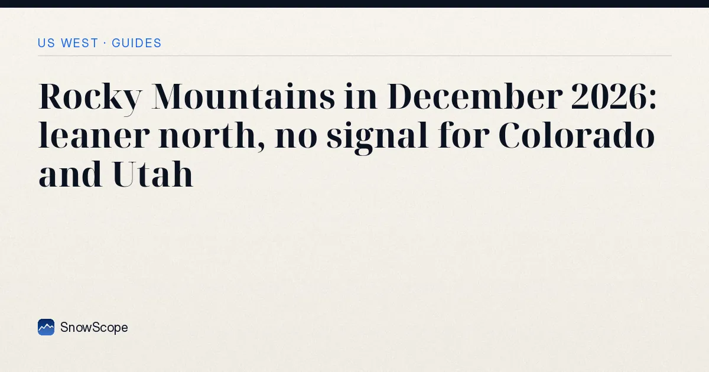
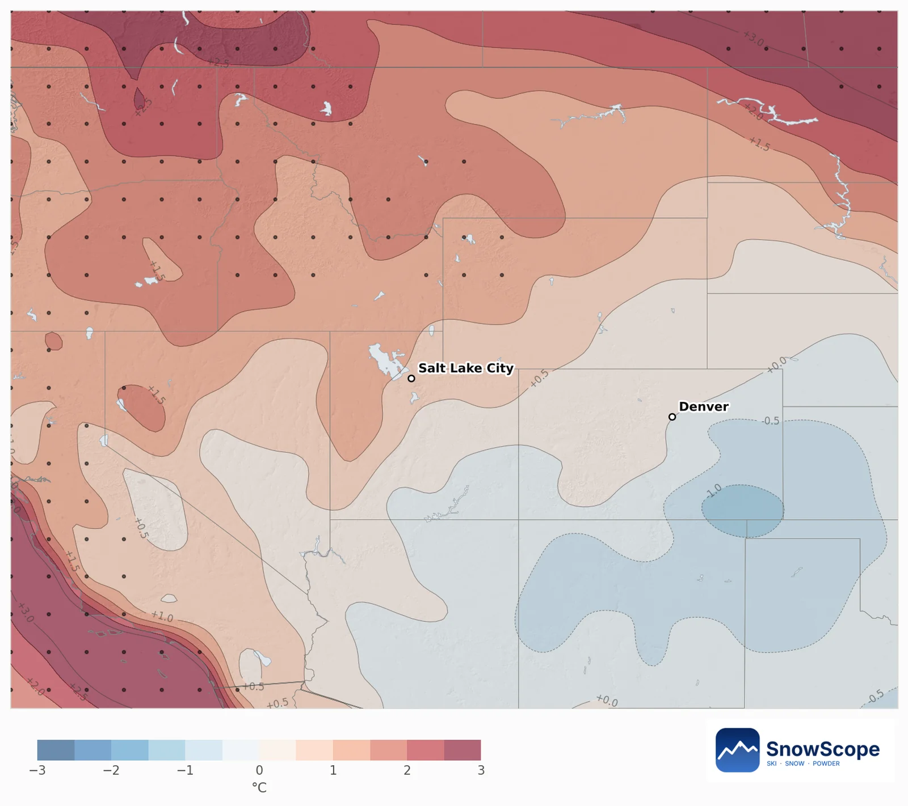
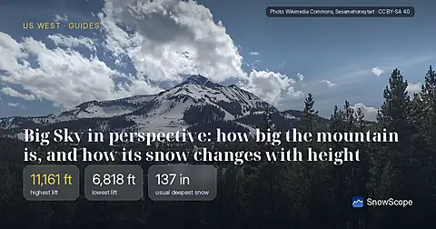

Rocky Mountains in December 2026: leaner north, no signal for Colorado and Utah
December across the Rocky Mountains is forecast to run about 1.6 °F (0.9 °C) warmer than usual, with precipitation holding near its long-term average. The picture varies sharply by latitude: northern ranges favour lean early-season snow, while Colorado and Utah show no clear tilt either way.
See the live snow forecast for Rocky Mountains in the SnowScope appSnow depth, powder alerts and the 3D map, free.

Where the signal splits
SnowScope compares each mountain area with its own record of past Decembers. Across the Rockies, four out of every five areas—79 percent—show no lean toward either snowier or leaner conditions. One fifth tilts leaner, almost all of it in the north from the Yellowstone plateau down through the ranges near Jackson and Big Sky. Only a handful of southern Utah peaks hint at snowier snow, just 1 percent of the region.
The odds of above-average new snow range from 27 percent in the driest parts to 62 percent in the wettest, with a middle value of 45 percent across the range.
Temperature and moisture: the reason for the split
Fifty-one seasonal forecasts from the European weather centre agree that December will be warmer than the reference period (1993–2016). The warmth is not uniform: it peaks in the Northern Rockies at 3.1 °F (1.7 °C), where 82 percent of the runs show warming and only 33 percent show wet anomalies. In Colorado the signal weakens to 0.5 °F (0.3 °C), and in Utah it sits at 1.8 °F (1.0 °C). Meanwhile, precipitation sits 3 percent below a December average of 1.6 in (40 mm) across the whole range, with the ensemble split almost evenly—45 percent wetter, 55 percent drier.
This mix—modest warmth and near-normal or slightly dry precipitation—leaves Colorado and Utah in statistical limbo. The Northern Rockies, by contrast, face a warmer, slightly drier setup that historically favours thinner December snowpacks.


Colorado: neutral ground
Colorado ski areas (Breckenridge, Vail, Winter Park, Beaver Creek, Steamboat, Copper Mountain) usually see 20 in (51 cm) of fresh snow through December. This forecast calls for 18 in (46 cm)—slightly shy, but within the normal range of variation. Only 42 percent of past Decembers with similar conditions were snowy. The bigger picture is depth: by 31 December, Colorado usually has 33 in (84 cm) on the ground; the outlook is 31 in (80 cm), nearly identical.
Past Decembers most like this year's setup were 1995, 1985, and 2003. None were either snow-rich or snow-poor; they were ordinary months. That is what the forecast suggests now: plan for a typical December and adjust if single storms prove bigger or smaller than the seasonal average.
Utah's Wasatch: on track for average
Utah's higher, wetter terrain (Park City, Deer Valley, Snowbird, Alta, Solitude) catches 28 in (71 cm) of new snow in a normal December. The seasonal outlook again suggests 28 in (70 cm)—nearly identical. The chance of exceeding the long-term mean is 47 percent. By 31 December, the Wasatch usually has 41 in (103 cm) on the ground, and that is what the forecast expects as well.
No surprise to plan for: Utah looks lined up for a December much like the past few decades. The main variable will be when storms arrive and how high the snow line climbs on warm days.
Northern Rockies: lean early, then watch
Montana and Wyoming ski areas (Big Sky, Jackson Hole, Whitefish, Sun Valley, Bridger Bowl) face a leaner December odds ratio. The forecast calls for 24 in (60 cm) of new snow—below the usual 26 in (65 cm)—and only a 37 percent chance of exceeding the December mean. Depth on 31 December is forecast at 40 in (102 cm), matching the long-term average. The lean comes from above-average warmth and near-average moisture: snow will fall, but fewer days will be cold enough for it.
High, north-facing slopes hold an advantage early in the month, before melt or wind consolidation thins the base. As the month progresses, the 7-day forecast matters more than the monthly pattern. One or two big Pacific storms can flip the monthly total, so check the week-long outlook before departure rather than relying on the seasonal view.
Practical takeaway
Colorado and Utah skiers should plan for a normal December and book without hesitation. The Northern Rockies warrant a small hedge: aim for high terrain in the first few weeks, and be ready to follow the latest storm track later in the month. All three regions will benefit from checking the SnowScope map seven days before travel—it shows exact storm timing and the snow line by elevation, details a monthly outlook cannot capture.
Tips for skiers
- Colorado and Utah: treat this as a standard December. No signal from the forecast argues for changing your plans.
- Northern Rockies: prioritize high, north-facing runs in early December while the base is freshest. Lower slopes and south aspects may thin faster than usual.
- Watch the 7-day forecast one week before travel. A single major Pacific storm can reshape the December picture and shift snow lines by hundreds of metres.
- Use SnowScope's daily map to pinpoint the snow line at each resort and time your runs on steep terrain above it.
- Pack layers and sunscreen: warmer December means more sun and faster melt on south-facing slopes, especially in the afternoon.
About these numbers
Resort snow depths are the deepest snow on the resort's upper slopes on the date shown; they are estimates for an area, not a measurement at one point. Forecasts can change. Always read the official avalanche bulletin before going off-piste.
Cite this report
For research, teaching or the press: the numbers and charts are free to reuse under CC BY 4.0 with this citation.
SnowScope (2026), Rocky Mountains in December 2026: leaner north, no signal for Colorado and Utah, https://snowscope.app/blog/en/2026/11/rocky-mountains-december-2026-snow-outlook.html, accessed 2026-11-10
SnowScope (Atlas Labs). (2026, November 10). Rocky Mountains in December 2026: leaner north, no signal for Colorado and Utah. SnowScope snow reports. https://snowscope.app/blog/en/2026/11/rocky-mountains-december-2026-snow-outlook.html
BibTeX
@misc{snowscope2026rockymountainsdecember20,
author = {{SnowScope (Atlas Labs)}},
title = {Rocky Mountains in December 2026: leaner north, no signal for Colorado and Utah},
year = {2026},
month = nov,
howpublished = {\url{https://snowscope.app/blog/en/2026/11/rocky-mountains-december-2026-snow-outlook.html}},
note = {Published 2026-11-10 09:32 UTC; accessed 2026-11-10}
}· CC BY 4.0 · Methods, data and tools →
Follow Rocky Mountains
Free: a message when fresh snow is coming, and the forecast every morning.
More snow reports

Mt Baker, Washington: about 133 in (337 cm) at the usual peak at mid-mountain in 46 past winters, a world snowfall record, no lodging on the hill, and what that means.

Jackson Hole holds snow deep into spring on its high peaks. We checked six common beliefs against 46 winters of snow history. Data from November 2026.

Big Sky, Montana, made easy to picture: 5,850 acres under Lone Peak, and snow that is about five times deeper near the top than at the base in 46 past winters.